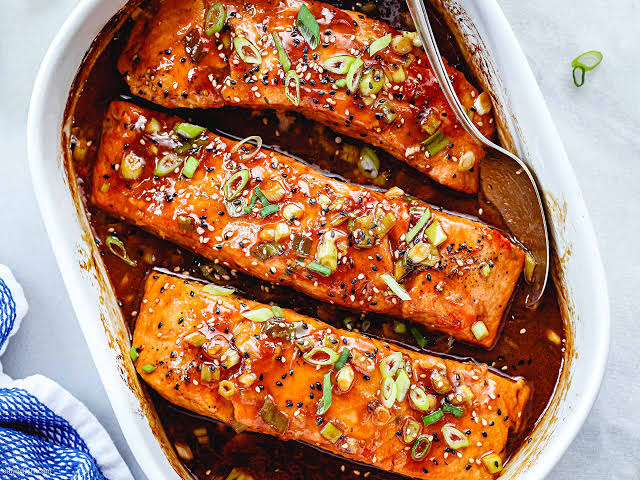

Teriyaki (照り焼き) in Japanese actually describes a cooking method that first appeared in Japan in the 1600s. Teri (照り) means luster, and yaki (焼き) means grilled, broiled, or pan-fried. It essentially refers to any food cooked this way that’s brushed with a shiny glaze called tare (タレ). Outside Japan, both the cooking style and sauce are commonly called teriyaki.
Salmon, chicken, yellowtail (hamachi), pork, and tofu are the most popular ingredients to cook teriyaki-style in Japan. Home cooks pan-fry them instead of cooking in an oven.